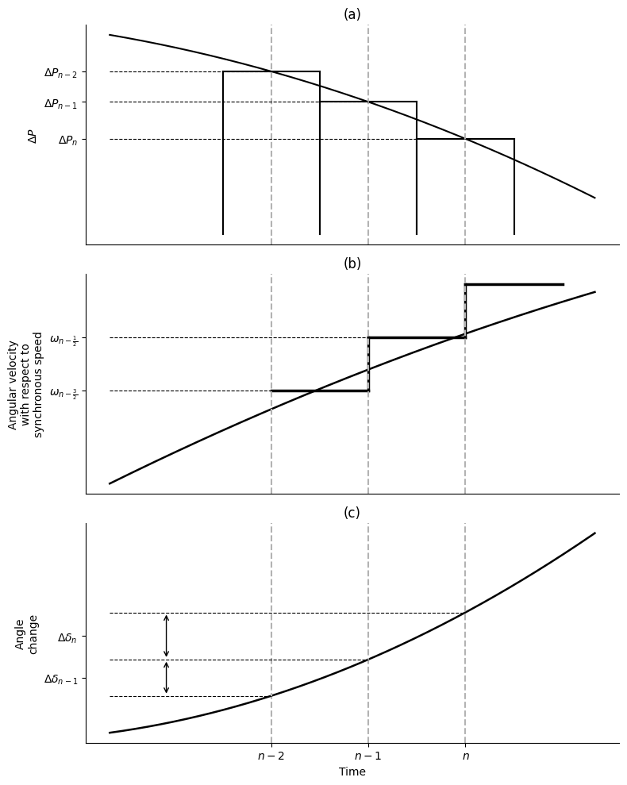

Euler-metoden#
I denne metoden bestemmes endringen i rotorvinkelen over korte tidsintervaller. Følgende antakelser gjøres:
Den akselererende effekten \(\Delta P\) ved begynnelsen av et tidsintervall antas konstant fra midten av forrige intervall til midten av det aktuelle intervallet.
Vinkelhastigheten \(\omega\) antas konstant gjennom hele tidsintervallet og beregnes for midtpunktet av intervallet.
Endring i vinkelhastighet#
Fra svingeligningen
fås
Over tidsintervallet \(\Delta t\) blir endringen i vinkelhastighet
eller
Dette uttrykket brukes til å oppdatere rotorens hastighet fra ett halvsteg til det neste.
Endring i rotorvinkel#
Rotorvinkelens endring i intervallet fra tid \((n-2)\) til \((n-1)\) er
Siden \(\omega_{n-\frac12}\) antas konstant gjennom intervallet,
Dermed fås
og
Numerisk algoritme#
For hvert tidssteg utføres følgende beregninger:
Beregn akselererende effekt
Oppdater vinkelhastigheten
Oppdater rotorvinkelen
Over det (n)-te intervallet er endringen i rotorvinkelen
Tilsvarende er
Ved å subtrahere disse uttrykkene fås
Fra hastighetsoppdateringen i punkt-for-punkt-metoden har vi
Innsetting gir
Dermed fås den rekursive ligningen
Dette er grunnlikningen for den klassiske punkt-for-punkt-metoden. Den viser at endringen i rotorvinkel i hvert nytt tidsintervall kan beregnes direkte fra:
den forrige vinkelendringen \(\Delta\delta_{n-1}\),
den akselererende effekten \(\Delta P_{n-1}\),
treghetskonstanten \(M\),
tidssteget \(\Delta_t\).
Når \(\Delta\delta_n\) er funnet, oppdateres rotorvinkelen fra
Fysisk betydning#
Metoden følger den naturlige årsakskjeden i kraftsystemet:
Den mekaniske og elektriske effektubalansen bestemmer rotorens akselerasjon. Akselerasjonen gir en endring i rotorhastigheten, og rotorhastigheten bestemmer deretter hvordan rotorvinkelen utvikler seg med tiden.
Ved å gjenta disse beregningene for små tidsintervaller kan den transiente rotorvinkelresponsen bestemmes numerisk uten å løse svinglikningen analytisk.

Fremgangsmåte#
Bestem \(\Delta_t\) (Vanligvis 0.05 s.)
Finn M
Beregn \(\frac{(\Delta_t)^2}{M}\)
Finn normal driftsvinkel; \(\delta_0 = sin^{-1}\big(\frac{P_m}{P_max}\big)\)
Finn \(\Delta P\), rett etter feilen; \(\Delta P = Pm - P_{max,feil} sin \delta_0\)
Den første verdien av den akselererende effekten refererer til midten av det foregående intervallet, mens den andre verdien refererer til midten av intervallet som analyseres: Bruk \(\Delta P = \frac{\Delta P}{2}\)
Finn ny \(\Delta\delta_n\):